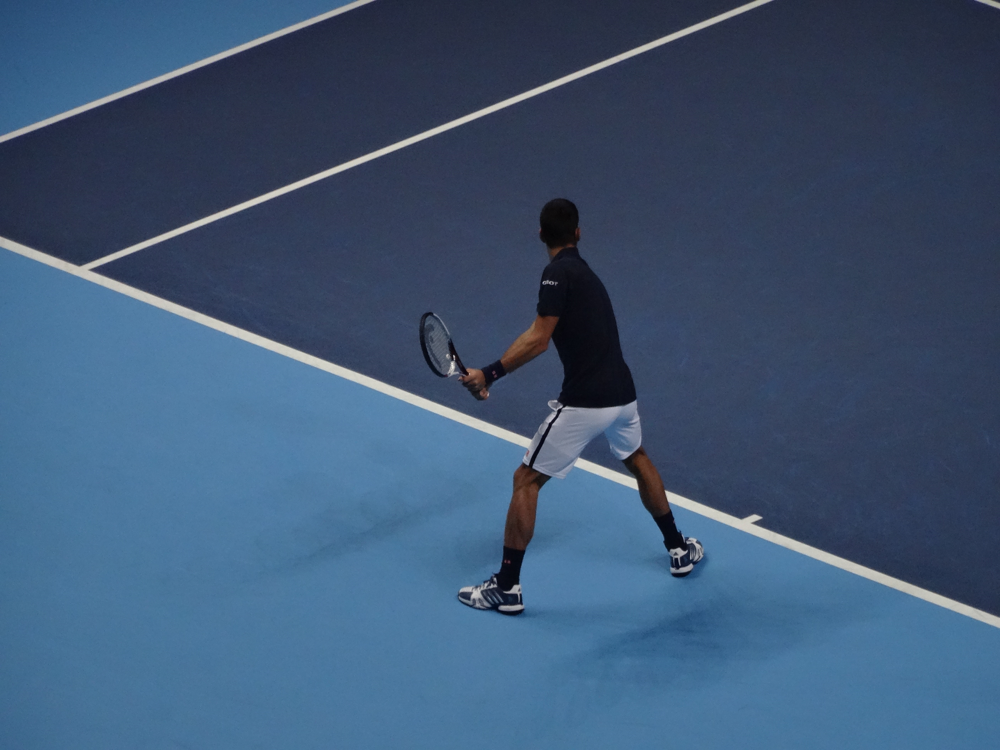
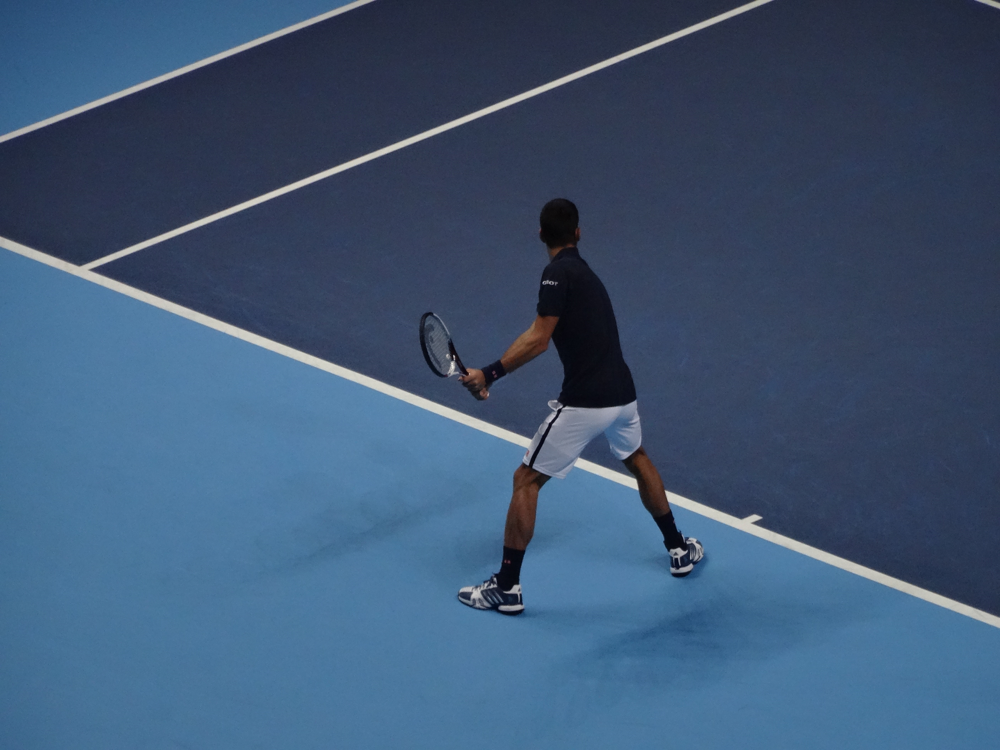

Contact point for the majority of groundstrokes are made as the ball descends from its bounce.
In contrast, when a player "hits on the rise" or "takes the ball early" with his/her groundstrokes the ball is struck before the ball has reached the apex of its bounce. Hence, the player makes contact shortly after the ball has bounced on his/her side of the court, whether it is immediately after the ball hits their side of the court or the ball is still in its upward motion from its bounce. Evidently this gives the player the opportunity to cut down on his/her opponent(s) recovery time and maintain a favorable court position as 2 of the biggest benefits.
 

Not only do Andy Murray and Novak Djokovic have great two-handed backhands, their ability to hit on the rise off both sides are exceptional as well.